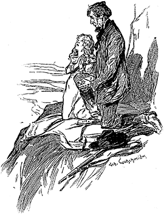
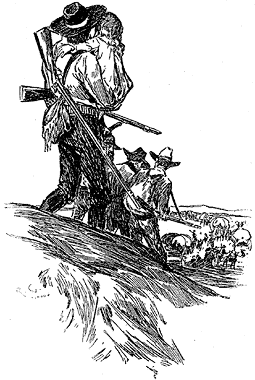

In the central portion of the great North American Continent there lies an arid and repulsive desert, which for many a long year served as a barrier against the advance of civilization. From the Sierra Nevada to Nebraska, and from the Yellowstone River in the north to the Colorado upon the south, is a region of desolation and silence. Nor is Nature always in one mood throughout this grim district. It comprises snow-capped and lofty mountains, and dark and gloomy valleys. There are swift-flowing rivers which dash through jagged cañons; and there are enormous plains, which in winter are white with snow, and in summer are grey with the saline alkali dust; They all present however, the common characteristics of barenness, inhospitality, and misery.
There are no inhabitants of this land of despair. A band of Pawnees or of Blackfeet may occasionally traverse it in order to reach other hunting-grounds, but the hardiest of the braves are glad to lose sight of those awsome plains, and to find themselves once more upon the prairies. The coyote skulks among the scrub, the buzzard flaps heavily through the air, and the clumsy grizzly bear lumbers through the dark ravines, and picks up such sustenance as it can amongst the rocks. These are the sole dwellers in the wilderness.
In the whole world there can be no more dreary view than that from the northern slope of the Sierra Blanco. As far as the eye can reach stretches the great flat plainland, all dusted over with patches of alkali, and intersected by clumps of the dwarfish chapparal bushes. On the extreme verge of the horizon lie a long chain of mountain peaks, with their rugged summits flecked with snow. In this great stretch of country there is no sign of life, nor of anything appertaining to life. There is no bird in the steel-blue heaven, no movement upon the dull, grey earth—above all, there is absolute silence. Listen as one may, there is no shadow of a sound in all that mighty wilderness; nothing but silence—complete and heart-subduing silence.
It has been said there is nothing appertaining to life upon the broad plain. That is hardly true. Looking down from the Sierra Blanco, one sees a pathway traced out across the desert, which winds away and is lost in the extreme distance. It is rutted with wheels and trodden down by the feet of many adventurers. Here and there there are scattered white objects which glisten in the sun, and stand out against the dull deposit of alkali. Approach and examine them! They are bones: some large and coarse, others smaller and more delicate. The former have belonged to oxen, and the latter to men. For fifteen hundred miles one may trace this ghastly caravan route by these scattered remains of those who had fallen by the wayside.
Looking down on this very scene, there stood upon the fourth of May, eighteen hundred and forty-seven, a solitary traveller. His appearance was such that he might have been the very genius or demon of the region. An observer would have found it difficult to say whether he was nearer to forty or to sixty. His face was lean and haggard, and the brown parchment-like skin was drawn tightly over the projecting bones; his long, brown hair and beard were all flecked and dashed with white: his eyes were sunken in his head, and burned with an unnatural lustre; while the hand which grasped his rifle was hardly more fleshy than that of a skeleton. As he stood, he leaned upon his weapon for support, and yet his tall figure and the massive framework of his bones suggested a wiry and vigorous constitution. His gaunt face, however, and his clothes, which hung so baggily over his shrivelled limbs, proclaimed what it was that gave him that senile and decrepit appearance. The man was dying—dying from hunger and from thirst.
He had toiled painfully down the ravine, and on to this little elevation, in the vain hope of seeing some signs of water. Now the great salt plain stretched before his eyes, and the distant belt of savage mountains, without a sign anywhere of plant or tree, which might indicate the presence of moisture. In all that broad landscape there was no gleam of hope. North, and east, and west he looked with wild, questioning eyes, and then he realized that his wanderings had come to an end, and that there, on that barren crag, he was about to die. "Why not here, as well as in a feather bed, twenty years hence," he muttered, as he seated himself in the shelter of a boulder.
Before sitting down, he had deposited upon the ground his useless rifle, and also a large bundle tied up in a grey shawl, which he had carried slung over his right shoulder. It appeared to be somewhat too heavy for his strength, for in lowering it, it came down on the ground with some little violence. Instantly there broke from the grey parcel a little moaning cry, and from it there protruded a small, scared face, with very bright brown eyes, and two little speckled dimpled fists.
"You've hurt me!" said a childish voice reproachfully.
"Have I though," the man answered penitently; "I didn't go for to do it." As he spoke he unwrapped the grey shawl and extricated a pretty little girl of about five years of age, whose dainty shoes and smart pink frock with its little linen apron, all bespoke a mother's care. The child was pale and wan, but her healthy arms and legs showed that she had suffered less than her companion.
"How is it now?" he answered anxiously, for she was still rubbing the towsy golden curls which covered the back of her head.
"Kiss it and make it well," she said, with perfect gravity, showing the injured part up to him.
"That's what mother used to do. Where's mother?"
"Mother's gone; I guess you'll see her before long."
"Gone, eh!" said the little girl, "Funny, she didn't say good-bye; she 'most always did if she was just goin' over to auntie's for tea, and now she's been away three days. Say, it's awful dry, ain't it? Ain't there no water nor nothing to eat?"
"No, there ain't nothing, dearie. You'll just need to be patient awhile, and then you'll be all right. Put your head up ag'in me like that, and then you'll feel bullier. It ain't easy to talk when your lips is like leather, but I guess I'd best let you know how the cards lie. What's that you've got?"
"Pretty things! fine things!" cried the little girl enthusiastically, holding up two glittering fragments of mica. "When we goes back to home I'll give them to brother Bob."
"You'll see prettier things than them soon," said the man confidently. "You just wait a bit. I was going to tell you though—you remember when we left the river?"
"Oh, yes."
"Well we reckoned we'd strike another river soon, d'ye see. But there was somethin' wrong; compasses, or map, or somethin' and it didn't turn up. Water ran out. Just except a little drop for the likes of you, and—and——"
"And you couldn't wash yourself," interrupted his companion gravely, staring up at his grimy visage.
"No, nor drink. And Mr. Bender, he was the fust to go, and then Indian Pete, and then Mrs. McGregor, and then Johnny Hones, and then, dearie, your mother."
"Then mother's a deader too," cried the little girl, dropping her face in her pinafore and sobbing bitterly.
"Yes, they all went except you and me. Then I thought there was some chance of water in this direction, so I heaved you over my shoulder and we tramped it together. It don't seem as though we've improved matters. There's an almighty small chance for us now!"
"Do you mean that we are going to die too?" asked the child, checking her sobs, and raising her tear-stained face.
"I guess that's about the size of it."
"Why didn't you say so before?" she said laughing gleefully. "You gave me such a fright. Why, of course, now as long as we die we'll be with mother again."
"Yes, you will, dearie."
"And you too. I'll tell her how awful good you've been. I'll bet she meets us at the door of heaven with a big pitcher of water, and a lot of buckwheat cakes, hot, and toasted on both sides, like Bob and me was fond of. How long will it be first?"
"I don't know—not very long." The man's eyes were fixed upon the northern horizon. In the blue vault of the heaven there had appeared three little specks which increased in size every moment, so rapidly did they approach. They speedily resolved themselves into three large brown birds, which circled over the heads of the two wanderers, and then settled upon some rocks which overlooked them. They were buzzards, the vultures of the west, whose coming is the forerunner of death.
"Cocks and hens," cried the little girl gleefully, pointing at their ill-omened forms, and clapping her hands to make them rise. "Say, did God make this country?"
"In course He did," said her companion, rather startled by this unexpected question.
"He made the country down in Illinois, and He made the Missouri," the little girl continued. "I guess somebody else made the country in these parts. It's not nearly so well done. They forgot the water and the trees."
"What would ye think of offering up prayer?" the man asked diffidently.
"It ain't night yet," she answered.
"It don't matter. It ain't quite regular, but He won't mind that, you bet. You say over them ones that you used to say every night in the waggon when we was on the Plains."
"Why don't you say some yourself?" the child asked, with wondering eyes.
"I disremember them," he answered. "I hain't said none since I was half the height o' that gun. I guess it's never too late. You say them out, and I'll stand by and come in on the choruses."
"Then you'll need to kneel down, and me too," she said, laying the shawl out for that purpose. "You've got to put your hands up like this. It makes you feel kind of good."
It was a strange sight, had there been anything but the buzzards to see it. Side by side on the narrow shawl knelt the two wanderers, the little prattling child and the reckless, hardened adventurer. Her chubby face and his haggard, angular visage were both turned up to the cloudless heaven in heartfelt entreaty to that dread Being with whom they were face to face, while the two voices—the one thin and clear, the other deep and harsh—united in the entreaty for mercy and forgiveness. The prayer finished, they resumed their seat in the shadow of the boulder until the child fell asleep, nestling upon the broad breast of her protector. He watched over her slumber for some time, but Nature proved to be too strong for him. For three days and three nights he had allowed himself neither rest nor repose. Slowly the eyelids drooped over the tired eyes, and the head sunk lower and lower upon the breast, until the man's grizzled beard was mixed with the gold tresses of his companion, and both slept the same deep and dreamless slumber.
Had the wanderer remained awake for another half-hour a strange sight would have met his eyes. Far away on the extreme verge of the alkali plain there rose up a little spray of dust, very slight at first, and hardly to be distinguished from the mists of the distance, but gradually growing higher and broader until it formed a solid, well defined cloud. This cloud continued to increase in size until it became evident that it could only be raised by a great multitude of moving creatures. In more fertile spots the observer would have come to the conclusion that one of those great herds of bisons which graze upon the prairie land was approaching him. This was obviously impossible in these arid wilds. As the whirl of dust drew nearer to the solitary bluff upon which the two castaways were reposing, the canvas-covered tilts of waggons and the figures of armed horsemen began to show up through the haze, and the apparition revealed itself as being a great caravan upon its journey for the West. But what a caravan! When the head of it had reached the base of the mountains, the rear was not yet visible on the horizon. Right across the enormous plain stretched the straggling array, waggons and carts, men on horseback, and men on foot. Innumerable women who staggered along under burdens, and children who toddled beside the waggons or peeped out from under the white coverings. This was evidently no ordinary party of immigrants, but rather some nomad people who had been compelled from stress of circumstances to seek themselves a new country. There rose through the clear air a confused clattering and rumbling from this great mass of humanity, with the creaking of wheels and the neighing of horses. Loud as it was, it was not sufficient to rouse the two tired wayfarers above them.
At the head of the column there rode a score or more of grave, iron-faced men, clad in sombre home-spun garments and armed with rifles. On reaching the base of the bluff they halted, and held a short council among themselves. "The wells are to the right, my brothers," said one, a hard-lipped clean-shaven man with grizzly hair.
"To the right of the Sierra Blanco—so we shall reach the Rio Grande," said another.
"Fear not for water," cried a third. "He who could draw it from the rocks will not now abandon His own chosen people."
"Amen! amen!" responded the whole party.
They were about to resume their journey when one of the youngest and keenest-eyed uttered an exclamation and pointed up at the rugged crag above them. From its summit there fluttered a little wisp of pink, showing up hard and bright against the grey rocks behind. At the sight there was a general reining up of horses and unslinging of guns, while fresh horsemen came galloping up to reinforce the vanguard. The word "Redskins" was on every lip.
"There can't be any number of Injuns here," said the elderly man who appeared to be in command. "We have passed the Pawnees, and there are no other tribes until we cross the great mountains."
"Shall I go forward and see, Brother Stangerson," asked one of the band.
"And I," "and I," cried a dozen voices.
"Leave your horses below and we will await you here," the elder answered. In a moment the young fellows had dismounted, fastened their horses, and were ascending the precipitous slope which led up to the object which had excited their curiosity. They advanced rapidly and noiselessly, with the confidence and dexterity of practised scouts. The watchers from the plain below could see them flit from rock to rock until their figures stood out against the skyline. The young man who had first given the alarm was leading them. Suddenly his followers saw him throw up his hands, as though overcome with astonishment, and on joining him they were affected in the same way by the sight which met their eyes.
On the little plateau which crowned the barren hill there stood a single giant boulder, and against this boulder there lay a tall man, long-bearded and hard-featured, but of an excessive thinness. His placid face and regular breathing showed that he was fast sleep. Beside him lay a little child, with her round white arms encircling his brown sinewy neck; and her golden-haired head resting upon the breast of his velveteen tunic. Her rosy lips were parted, showing the regular line of snow-white teeth within, and a playful smile played over her infantile features. Her plump little white legs, terminating in white socks and neat shoes with shining buckles, offered a strange contrast to the long shrivelled members of her companion. On the ledge of rock above this strange couple there stood three solemn buzzards, who, at the sight of the new comers, uttered raucous screams of disappointment and flapped sullenly away.
The cries of the foul birds awoke the two sleepers, who stared about them in bewilderment. The man staggered to his feet and looked down upon the plain which had been so desolate when sleep had overtaken him, and which was now traversed by this enormous body of men and of beasts. His face assumed an expression of incredulity as he gazed, and he passed his bony hand over his eyes. "This is what they call delirium, I guess," he muttered. The child stood beside him, holding on to the skirt of his coat, and said nothing, but looked all round her with the wondering, questioning gaze of childhood.
The rescuing party were speedily able to convince the two castaways that their appearance was no delusion. One of them seized the little girl and hoisted her upon his shoulder, while the others supported her gaunt companion, and assisted him towards the waggons.
"My name is John Ferrier," the wanderer explained; "me and that little un are all that's left o' twenty-one people. The rest is all dead o' thirst and hunger away down in the south."
"Is she your child?" asked some one.
"I guess she is now," the other cried, defiantly; "she's mine 'cause I saved her. No man will take her from me. She's Lucy Ferrier from this day on. Who are you though?" he continued, glancing with curiosity at his stalwart, sunburned rescuers; "there seems to be a powerful lot of ye."
"Nigh upon ten thousand," said one of the young men; "we are the persecuted children of God—the chosen of the Angel Merona."
"I never heard tell on him," said the wanderer. "He appears to have chosen a fair crowd of ye." "Do not jest at that which is sacred," said the other sternly. "We are of those who believe in those sacred writings, drawn in Egyptian letters on plates of beaten gold, which were handed unto the holy Joseph Smith at Palmyra. We have come from Nauvoo, in the State of Illinois, where we had founded our temple. We have come to seek a refuge from the violent man and from the godless, even though it be the heart of the desert."
The name of Nauvoo evidently recalled recollections to John Ferrier. "I see," he said; "you are the Mormons."
"We are the Mormons," answered his companions with one voice.
"And where are you going?"
"We do not know. The hand of God is leading us under the person of our Prophet. You must come before him. He shall say what is to be done with you."
They had reached the base of the hill by this time, and were surrounded by crowds of the pilgrims—pale-faced, meek-looking women; strong, laughing children; and anxious, earnest-eyed men. Many were the cries of astonishment and of commiseration which arose from them when they perceived the youth of one of the strangers and the destitution of the other. Their escort did not halt, however, but pushed on, followed by a great crowd of Mormons, until they reached a waggon, which was conspicuous for its great size and for the gaudiness and smartness of its appearance. Six horses were yoked to it, whereas the others were furnished with two, or, at most, four a-piece. Beside the driver there sat a man who could not have been more than thirty years of age, but whose massive head and resolute expression marked him as a leader. He was reading a brown-backed volume, but as the crowd approached he laid it aside, and listened attentively to an account of the episode. Then he turned to the two castaways.
"If we take you with us," he said, in solemn words, "it can only be as believers in our own creed. We shall have no wolves in our fold. Better far that your bones should bleach in this wilderness than that you should prove to be that little speck of decay which in time corrupts the whole fruit. Will you come with us on these terms?"
"Guess I'll come with you on any terms," said Ferrier, with such emphasis that the grave Elders could not restrain a smile. The leader alone retained his stern, impressive expression.
"Take him, Brother Stangerson," he said, "give him food and drink, and the child likewise. Let it be your task also to teach him our holy creed. We have delayed long enough. Forward! On, on to Zion!"
"On, on to Zion!" cried the crowd of Mormons, and the words rippled down the long caravan, passing from mouth to mouth until they died away in a dull murmur in the far distance. With a cracking of whips and a creaking of wheels the great waggons got into motion and soon the whole caravan was winding along once more. The Elder to whose care the two waifs had been committed led them to his waggon, where a meal was already awaiting them.
"You shall remain here," he said. "In a few days you will have recovered from your fatigues. In the meantime, remember that now and for ever you are of our religion. Brigham Young has said it, and he has spoken with the voice of Joseph Smith, which is the voice of God."